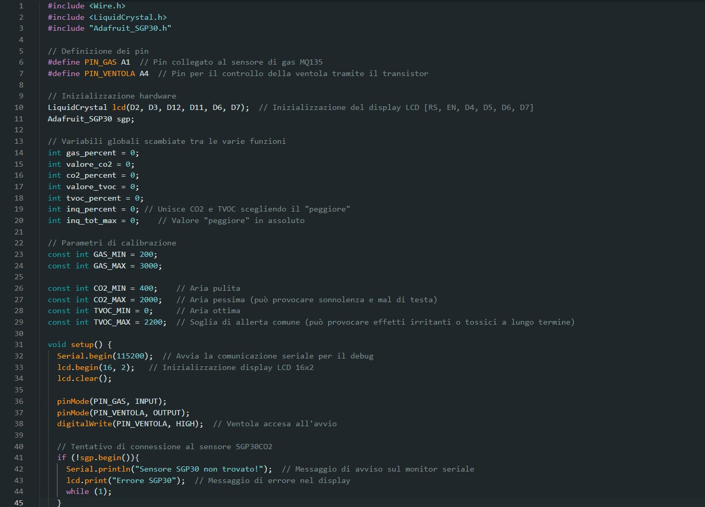
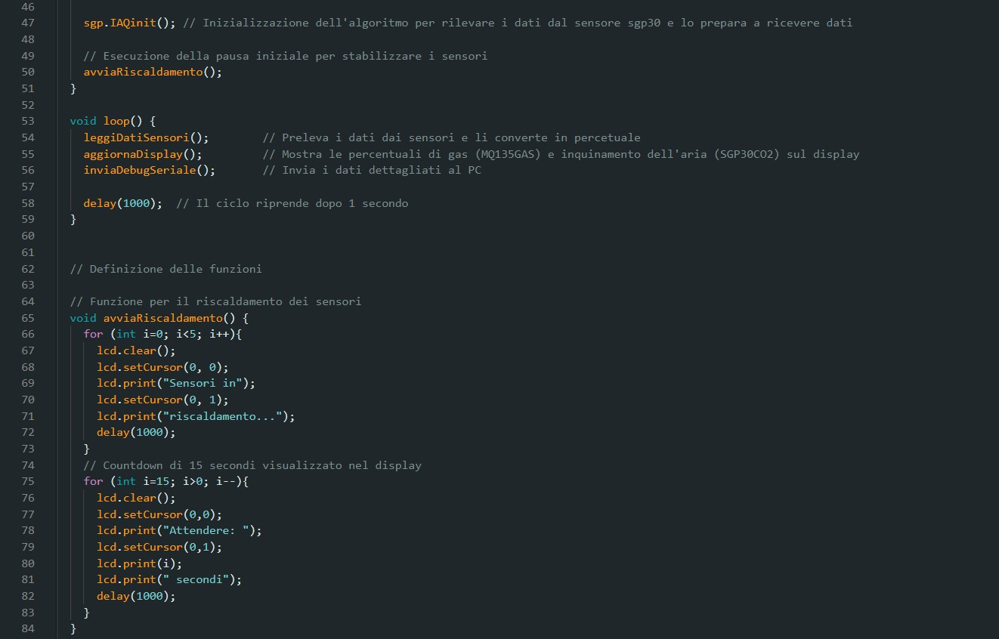
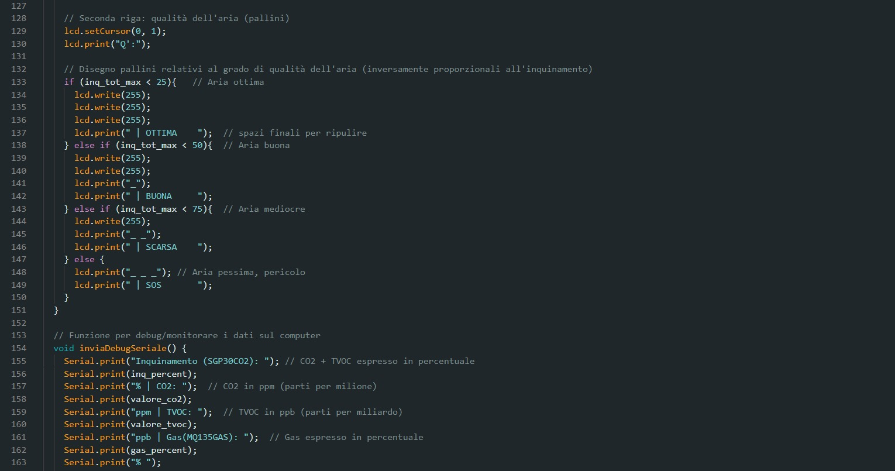
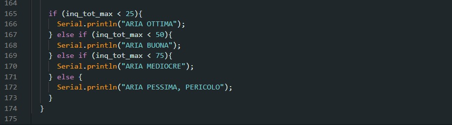
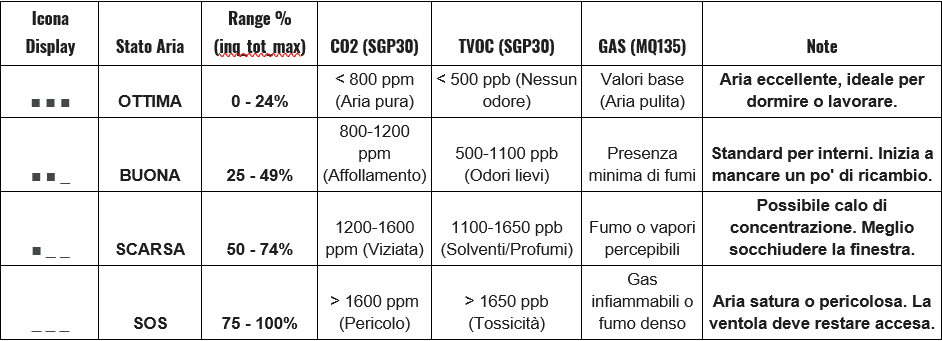
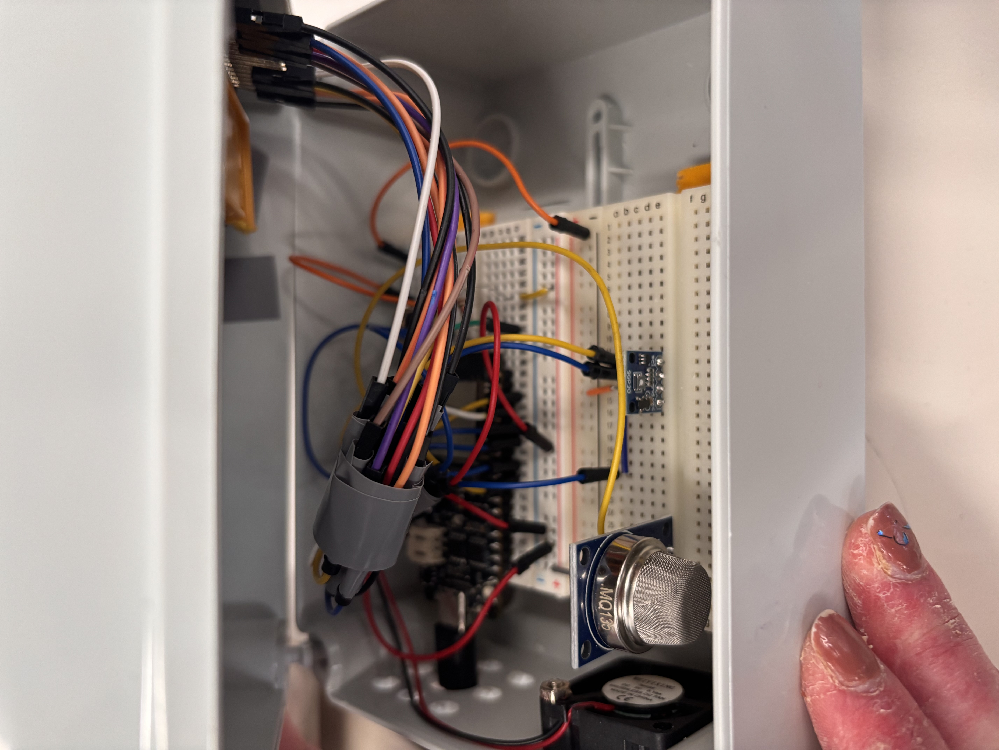
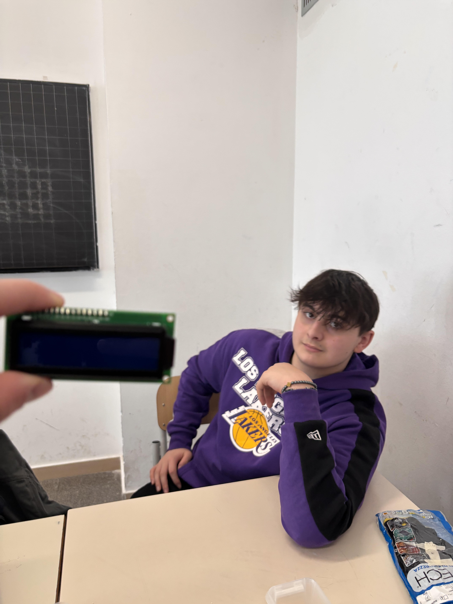
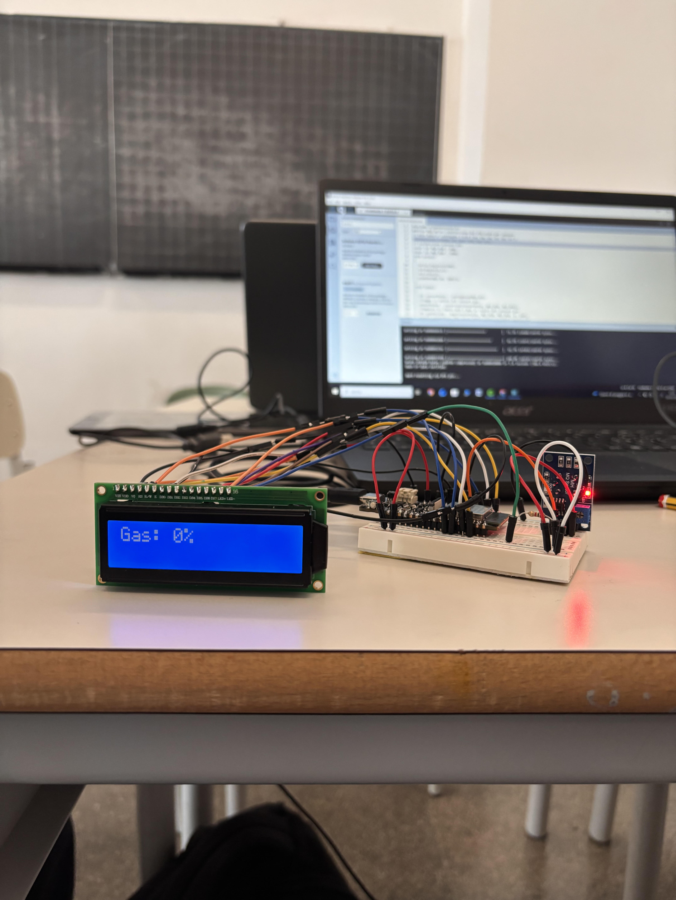

SISTEMA DI MONITORAGGIO DELL'ARIA INDOOR
Descrizione del progetto
Componenti utilizzati
- Microcontrollore ESP32: ideale per applicazioni IoT. Dispone di un convertitore analogico-digitale (ADC) a 12 bit.
- Sensore MQ-135: sensore a ossido di metallo (MOX) progettato per rilevare la qualità generale dell'aria. È sensibile a gas come ammoniaca, benzene, alcol, fumo e anidride carbonica. Richiede un tempo di pre-riscaldamento per letture stabili.
- Ventola DC: utilizzato per “risucchiare” aria all’interno della scatola fornendo aria da poter far analizzare ai sensori rilevando i dati di gas e inquinamento.
- Display LCD 16x2: schermo alfanumerico in grado di visualizzare due righe da 16 caratteri ciascuna. È utilizzato per mostrare in tempo reale i valori rilevati dai sensori e lo stato del sistema. Dispone di 16 pin per il collegamento, che includono alimentazione (VSS, VDD), controllo contrasto (VO), pin di controllo (RS, RW, E) e pin dati (D0-D7).
- SGP30CO2: sensore digitale ad alta precisione che comunica tramite interfaccia I2C. Fornisce segnali pre-elaborati per composti organici volatili totali (TVOC) in ppb (parti per miliardo) e per l’eCO2 in ppm (parti per milione).
- Transistor: necessario per gestire il motore della ventola.
- Resistenze: per limitare la corrente.
- Breadboard: per l’alloggiamento dei componenti (permette il prototipaggio rapido senza saldature).
- Cavi: per la realizzazione dei vari collegamenti.
- Alimentazione.
Ci siamo aiutati anche con strumenti come saldatore, trapano e cacciavite.
Vincoli e Caratteristiche del Sistema
VINCOLI:
- Precisione dei sensori: i sensori di tipo MQ richiedono un tempo di pre-riscaldamento (warm-up) significativo per fornire letture stabili e sono soggetti a deriva termica e sensibilità crociata (possono reagire a gas diversi da quelli target).
- Calibrazione: il sistema necessita di una calibrazione periodica in aria pulita per mantenere l'accuratezza dei valori di CO2 e VOC (Composti Organici Volatili).
CARATTERISTICHE:
- Monitoraggio multi-parametrico: il sistema incrocia i dati analogici dell'MQ135 con quelli digitali dell'SGP30 per una visione completa degli inquinanti indoor.
- Visualizzazione real-time: I dati vengono aggiornati costantemente sul display LCD, permettendo all'utente una lettura immediata.
Parte hardware
Parte software





Parte Software: Librerie
- Wire.h: implementa il protocollo I2C, uno standard di comunicazione seriale sincrona. È il driver necessario per stabilire la connessione tra la scheda e il sensore SGP30 utilizzando solo due pin (SDA e SCL), ottimizzando così i collegamenti.
- Adafruit_SGP30.h: gestisce l'inizializzazione del sensore e l'auto-calibrazione. Implementa l'algoritmo necessario per convertire le variazioni di resistenza elettrica rilevate dal chip in valori digitali di eCO2 e TVOC.
- LiquidCrystal.h: funge da interfaccia tra il microcontrollore e il display. Permette di gestire l'output visivo in modo efficiente, formattando i dati in stringhe di testo e simboli grafici leggibili.
Parte Software: Conversione
La conversione in percentuale non è arbitraria, ma è tarata su standard normativi di salute indoor. Il 100% rappresenta il punto in cui la concentrazione di inquinanti richiede un intervento immediato (aprire le finestre o attivare la ventilazione).
La conversione dai dati grezzi rilevati a valori in percentuale segue questo schema:
- Definizione dei range: sono stati stabiliti per ogni sensore un valore di Minimo (aria pulita) e un valore di Massimo (soglia di pericolo).
- Protezione dei dati per evitare valori fuori scala: è stata utilizzata la funzione constrain() per bloccare i risultati entro l'intervallo stabilito, evitando che picchi improvvisi di inquinamento creino errori
- 3. Proporzione matematica: la funzione map() riproporziona il valore letto tra questi due estremi in una scala da 0 a 100.
Valori di conversione:
- Per la CO2 (eCO2) ci siamo basati sugli standard ASHRAE e ISS:
- 400 ppm corrisponde al livello base dell’aria esterna (0%).
- Tra 1000 e 1200 ppm c’è il limite consigliato per scuole e uffici.
- 2000 ppm è la soglia in cui possono comparire sonnolenza e mal di testa (100%).
- Per i TVOC ci siamo basati sui livelli di comfort ambientale:
- Da 0 a 220 ppb l’aria è considerata eccellente.
- 2200 ppb è il limite oltre il quale l’aria diventa satura di inquinanti chimici, come vernici, fumo e detergenti, e può risultare irritante.
- Per il Gas (MQ135) ci siamo basati sulla sensibilità del sensore:
- Il valore minimo (GAS_MIN) è stato impostato sul valore letto in una stanza pulita.
- Il valore massimo (GAS_MAX) è stato definito in base alla risposta del sensore in presenza di fumo o gas infiammabili.
Parte Software: Legenda Dei Livelli Di inquinamento e Qualità Dell'Aria

Realizzazione e Architettura
Il sistema è stato progettato come un ecosistema integrato in cui ogni componente collabora per garantire una lettura accurata. Una ventola DC, pilotata tramite un transistor, convoglia attivamente l’aria verso il cuore del dispositivo per un campionamento costante. La cooperazione tra il sensore analogico MQ135 e il sensore digitale SGP30 permette di incrociare i dati su gas generici, CO2 e TVOC. Il coordinamento è affidato al microcontrollore ESP32, che elabora i segnali e restituisce i risultati in tempo reale sul display LCD.
Di seguito è riportato l’approccio costruttivo:
- Campionamento attivo: utilizzo di una ventola con gestione a transistor per forzare il ricircolo dell'aria sui sensori.
- Rilevamento: combinazione di tecnologia analogica (MQ135) e digitale I2C (SGP30) per un monitoraggio multi-parametrico.
- Elaborazione dati: sfruttamento dell'ADC a 12 bit dell'ESP32 per un'elevata risoluzione nella lettura dei segnali.
- Interfaccia utente: visualizzazione immediata dei parametri critici tramite schermo alfanumerico 16x2.
- Prototipazione rapida: assemblaggio su breadboard con cablaggi ottimizzati e resistenze di protezione per la massima stabilità elettrica.
Difficoltà riscontrate
Durante lo sviluppo del prototipo le difficoltà principali sono state il collegamento dei cavi e la calibrazione dei sensori. Il cablaggio sulla breadboard ha richiesto molta attenzione, soprattutto per il numero elevato di collegamenti necessari tra sensori, display e microcontrollore, per evitare errori e falsi contatti. Anche la calibrazione dei sensori è stata una fase delicata, perché ha richiesto la ricerca e definizione delle soglie minime e massime rilevate dai sensori.
Foto del progetto


